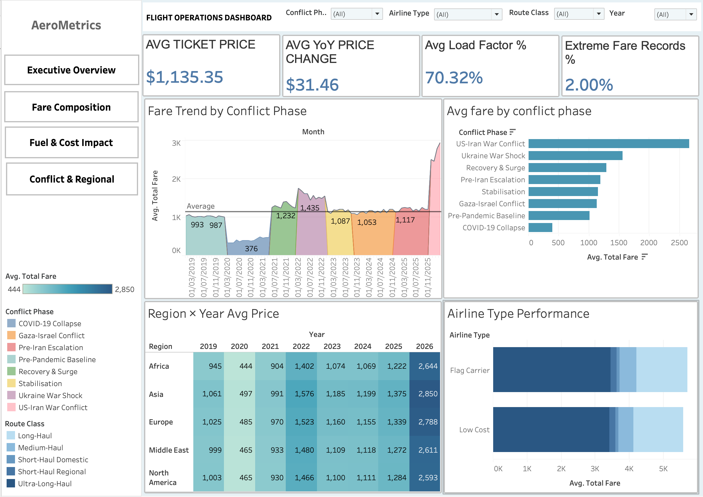
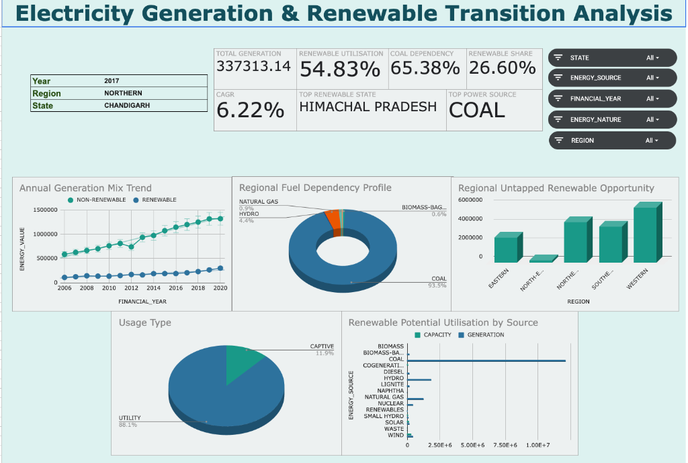

Data Analyst & Problem Solver
Transforming raw data into actionable insights.
I specialize in building end-to-end data pipelines, creating intuitive dashboards, and deriving strategic recommendations using a modern data stack.
Technical Arsenal
SQL
MongoDB
Google Sheets
Tableau
Pandas
NumPy
Featured Case Studies

Airline Ticket Prices vs. Fuel Costs Analysis
An analysis of whether fuel cost increases are passed to consumers, and the impact of geopolitical conflicts.
View Case Study

DVA Capstone: Interactive Data Analysis
A comprehensive exploratory data analysis and dynamic dashboarding project built entirely within Google Sheets.
View Case Study